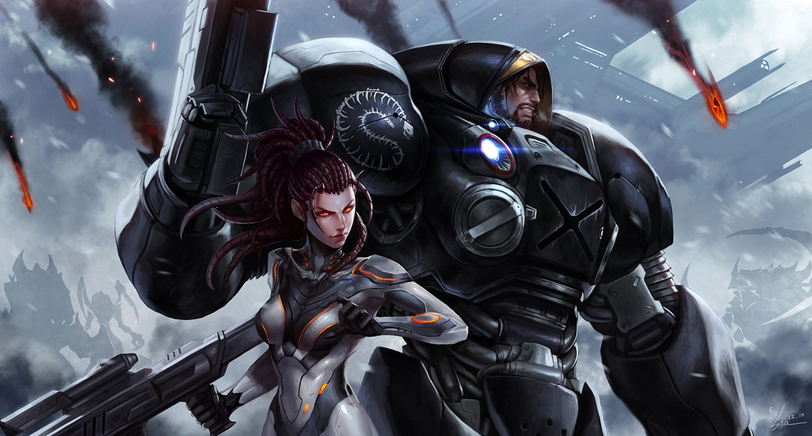
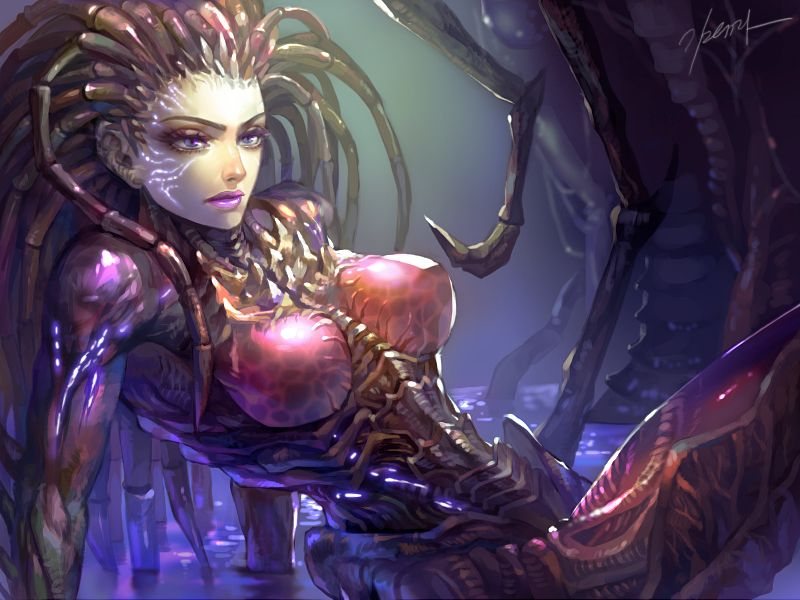
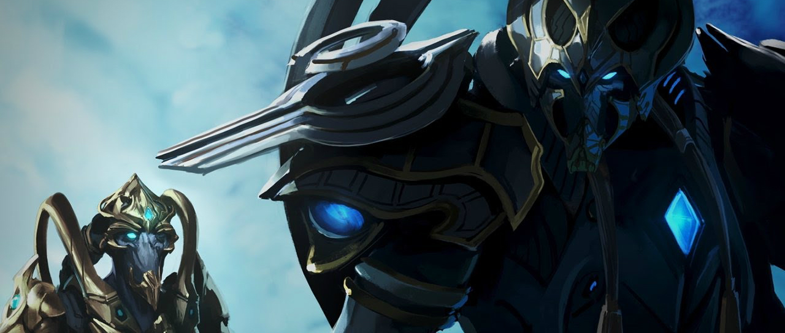

- 
- La construcción de edificios en cualquier parte, algunos edificios pueden volar.
- Pueden usar armas nucleares como último recurso.
- Debido a que los edificios y unidades son resistentes y poderosas, atacar una base terran sería una tarea difícil.
- Si sobra recursos, se pueden usar para reparar unidades mecánicas y edificios.
- El gran tamaño de los edificios hace que los espacios entre edificios sean estrechos, impidiendo el paso a unidades grandes.
- Mejoras caras, largo tiempo de construcción y solo un VCE debe construir un edificio a la vez.
- Si la barra de vida del edificio cae a rojo, se incendia y es destruida si no se repara a tiempo.
- 
- Las unidades son rápidas y baratas.
- Algunas unidades terrestres se pueden enterrar.
- Todas las unidades y edificios se regeneran.
- Para construir edificios Zerg, los jugadores deben sacrificar un zangano.
- Los edificios (salvo el criadero y las refinerías de las 3 razas) deben construirse sobre biomateria (talo en la versión latina), que se esparce lentamente.
- Los jugadores deben crear edificios defensivos para proteger su enjambre.
- 
- Las unidades y edificios son resistentes y fuertes y algunas unidades pueden usar sus propias habilidades.
- La mitad de la barra de vida de cada unidad o edificio protoss en realidad es la barra de escudo, que se recarga.
- Las sondas pueden activar la grieta-distorsión para construir edificios, permitiendo a las sondas atacar o recolectar recursos.
- El alto costo de los edificios y unidades comparado con las demás razas.
- A pesar de que los médicos pueden sanar unidades biológicas, no es posible reparar unidades mecánicas ni edificios.
- Los jugadores deben construir pilones para potenciar o construir edificios (salvo el nexo y las refinerías de las 3 razas). Si las destruyen, los edificios quedan desactivados.
TERRAN
Son humanos exiliados de la Tierra siglos atrás, que se establecieron en el sector Koprulu. Establecieron tres colonias para su sobrevivencia: la Confederación, la Asociación Kel-Morian y el Protectorado umojan. La Confederación fue derrocada por un grupo revolucionario y terrorista liderado por Arcturus Mengsk durante la invasión Zerg. Resurgiendo de las cenizas de la antigua Confederación nace el Dominio Terran con Arcturus Mengsk como Emperador/Dictador.
Sus ventajas son:
Sus debilidades son:
ZERG
Son del tipo insectoide con una capacidad de adaptabilidad superior e incontables en número, asesinos por naturaleza. Durante los tiempos en que los Xel Naga buscaban crear a la raza perfecta crearon a la mente suprema una criatura enorme y con una inteligencia superior, para dominación total de la raza Zerg, la cual mandaba a sus infestadores a los planetas más cercanos para absorber la esencia de otras razas y así perfeccionar al enjambre. Cuando la mente suprema descubrió a los Terran, supo que era el momento para actuar y robar su esencia, fue así cuando descubrió a una humana con grandes capacidades psionicas perfecta para sus propósitos, así fue una de las mayores creaciones de la mente suprema la reina de las espadas "Sarah Kerrigan".
Sus ventajas son:
Sus debilidades son:
PROTOSS
Son seres Muy desarrollados tecnológicamente que utilizan sus poderes Psionicos como arma principal fueron creados por los Xel Naga mucho antes que los zerg y los terran. Su planeta madre fue Aiur que más tarde fue destruido por los zerg durante la guerra, después de esto los protoss migraron a Shakuras para comenzar a reconstruir su patria nuevamente.
Sus ventajas son:
Sus debilidades son: